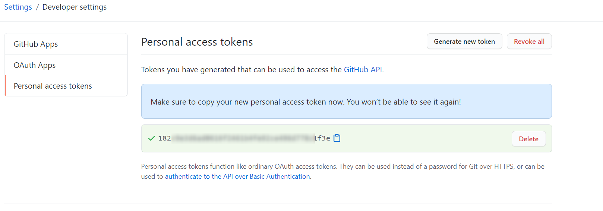

publicからprivateに変更する設定手順
2018年にGitHubはMicrosoftに買収され、privateも条件付きながら無料で利用できるようになった。手順
-
GitHubのWEBサイトにアクセス→対象リポジトリを選択→「Setting」を選択する。

-
Setting画面を「Danger Zone」まで下にスクロールする。
そして「Make private」ボタンを押す。
-
下側のテキストボックスにプロジェクト名を入力する。
プロジェクト名を入力するとすぐ下のボタンが押せるようになるので押す。
-
GitHubアカウントのパスワードを入力して完了。

ローカルリポジトリのコミットを取り消す方法
ローカルでコミットを行ったあとリモートへのプッシュに失敗することがある。例えば100MBファイルを超えるファイルをローカルでコミット後、GitHubにプッシュしようとすると容量制限で拒否されるというケースである。
この場合、ローカルでのコミットを取り消す必要がある。
そのコミットの取り消し手順を以下に示す。
-
Eclipseのコミット履歴画面にて元に戻すコミットIDを確認する。
プロジェクトを右クリック→Team→Show in History


-
GitBashを起動し、cdコマンドで対象プロジェクトに移動する。
-
下記コマンドによりコミットの取り消しを行える
git reset --hard コミットID
プロジェクトのコピーとEclipseのGit | .project
プロジェクトをディレクトリごとコピーし、そのコピーしたディレクトリをEclipseで開くと自動的にリポジトリとして管理されてしまうことがある。原因と対策
Eclipseのおいて、ディレクトリの直下に「.project」ファイルがあると、そのディレクトリはプロジェクト認識されるのが原因。「.project」ファイルが存在するディレクトリはリポジトリとして管理される。
Eclipse中でリポジトリとして管理したくない場合、「.project」ファイルは除去しておくこと。
個人アクセストークンの発行 | Personal access tokens
-
GitHubのサイトに自分のアカウントでログイン。
右上の自分アイコンからSetteingをクリック。
-
Developer settingを選択
-
左側メニューからPersonal access tokens →
文章中からGenerate a personal access token
-
New personal access token画面にてすべてのチェックボックスにチェックを入れ、「Generate token」ボタンを押下
以上で個人アクセストークンが発行される。

Git Hub | PR | プルリクエストのレビュー必須化について
参考：GitHub Docs:プルリクエストの必須レビューを有効にする-
Require pull request reviews before merging
マージする前にプルリクエストのレビューを要求できる。 - ブランチ単位でプルリクエストのレビュー必須化ができる。
-
Required approving reviews
必要な承認レビュー数を設定できる。 -
Dismiss stale pull request approvals when new commits are pushed
新しいコミットがプッシュされたときに、古いプルリクエストの承認を却下する。
-
Restrict who can dismiss pull request reviews
プルリクエストのレビューを却下できるユーザーを制限する。 -
Include administrators
設定されたすべての制約がリポジトリ管理者に強制されます。
SSH Keyの作成とGitHubへ登録 | 公開鍵と秘密鍵
-
$ cd ~/.ssh
-
SSH Keyの作成
$ssh-keygen -t rsa
３回ほど質問されるが、そのままEnterでOK. -
クリップボードにSSH keyをコピー（id_rsa.pubファイルの中身をコピー）（Windows用のコマンド）
$ clip < ~/.ssh/id_rsa.pub
-
GitHubサイトにSSH Keysを登録する。
GitHubのマイページからSSH Keyの登録画面を開く。GitHubのマイページ→Setting→左メニューのSSH and GPG keys→New SSH keyボタン
登録画面を開いたらTitleに任意の名前、「Key」にクリップボードにコピーしてあるSSH Keyを張り付ける。
Add keyボタンを押して登録完了
-
接続確認
$ ssh -T git@github.com
「 You've successfully authenticated, but GitHub does not provide shell access.」という感じのメッセージが出たら成功。
Gitの改行コードを無変換にする | core.autocrlf=false
core.autocrlf=falseについて
Gitはチェックアウトやコミット時に設定によっては勝手にソースコードの改行を変換してしまう。勝手な改行を行わないようにするには下記コマンドを実行する。
$ cd ~ $ git config --global core.autocrlf false設定の確認コマンド
git config --list --global
プロジェクト別で設定する場合、localを指定して設定。
$ cd プロジェクトのルートパス $ git config --local core.autocrlf false $ git config --list --local
core.autocrlfのその他設定値について
| core.autocrlfのセット値 | チェックアウト時 | コミット時 |
|---|---|---|
| true | LFからCRLFに変換 | CRLFからLF変換 |
| input | 変換せず | CRLFからLFに変換 |
| false | 変換せず | 変換せず |
ローカル環境専用のファイル管理対象外 | .git/info/exclude
チーム開発において、個人的に作成したファイルは.gitnoreに追記しづらい。この場合は「.git/info/exclude」ファイルに記述するとよい。
例：my_tool内のファイルはGit管理対象外にする。
$ cd ~/git/animals $ echo my_tool/* >> .git/info/exclude
ディレクトリ構造
- animals ←プロジェクト - .git - info - exclude ←このファイルに管理対象外ファイルを記述する。 - my_tool - test_tool.php ←管理対象外ファイルになる - index.html
.git/info/excludeファイルの中身
# git ls-files --others --exclude-from=.git/info/exclude # Lines that start with '#' are comments. # For a project mostly in C, the following would be a good set of # exclude patterns (uncomment them if you want to use them): # *.[oa] # *~ my_tool/*
その他の記述例
$ echo test/dummy/xxx.php >> .git/info/exclude「ルート/test/dummy/xxx.php」ファイルをGit管理対象外にする。